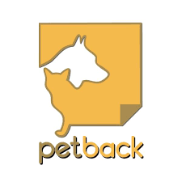

Qui sommes nous ?
Fondateur

Notre volonté
PETBACK est une application qui sera développée afin d’aider les propriétaires d’animaux à retrouver leurs animaux perdus et donc également de permettre aux personnes ayant trouvé un animal de retrouver leur maître.


Avis de professionnels :

Sylvie, 32 ans, vétérinaire : Cette application est vraiment bien et permet aux animaux de retrouver leur foyer. Je recommande.

David, 41 ans, vétérine : Depuis le lancement de cette application, le nombres d'animaux à considérablement baissé. C'est génial.

Karine, 58 ans, refuge : C'est très pratique pour pouvoir retrouver son animal qui s'est perdu.